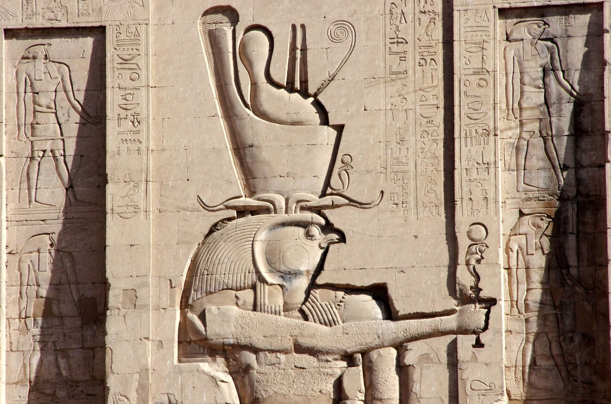
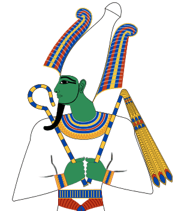
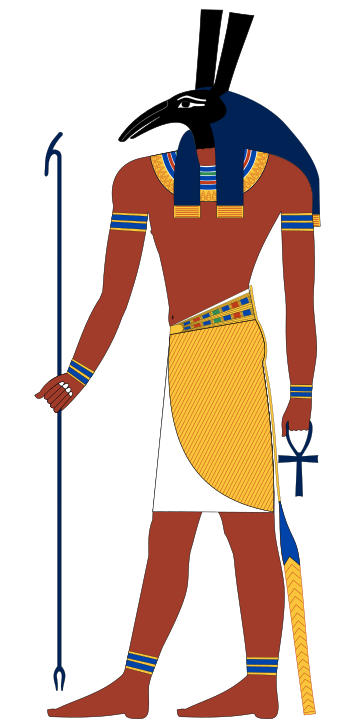
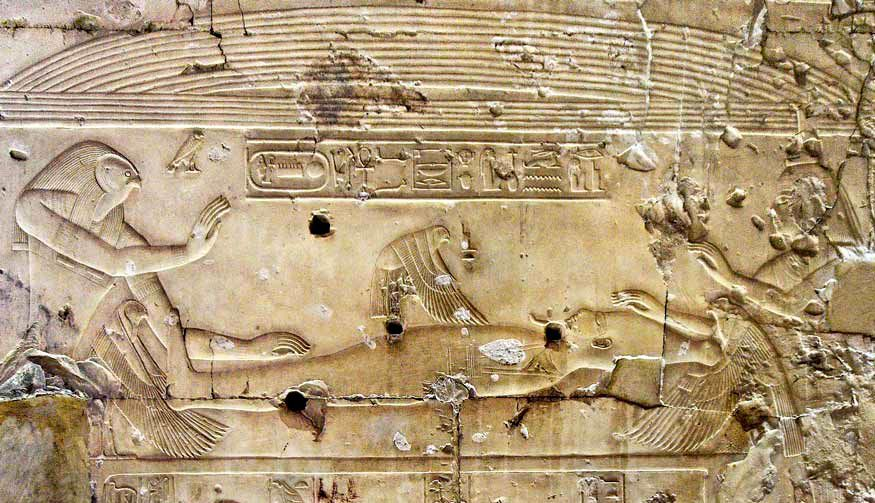
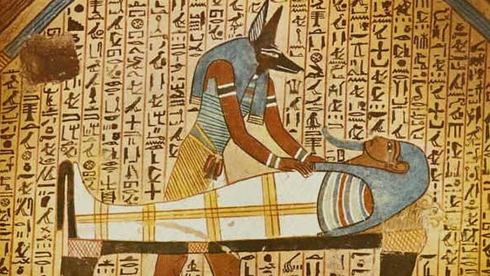
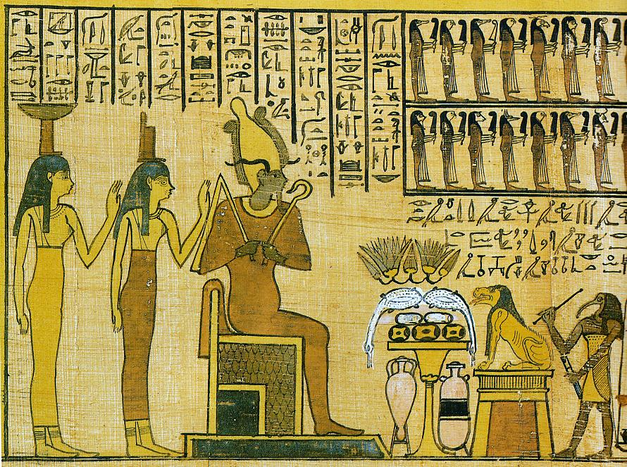

Re, the sun god, carefully observed the whole world as well as the Duat (the afterlife). One day,
he discovered that Nut was pregnant after having a relationship with Geb. He entered a great
anger and forbids the goddess to give birth. However, Nut had no choice: when she
would come to term, her offspring would be born and she would be punished by Re. She searched in vain for
hide, but the sun god saw everything, leaving nothing to chance. It was the god Thoth who came
to his rescue because he was himself in love with Nut: so he would have done anything for her. He imagined
a clever plan to deceive Re, which consisted of playing dice with the Moon. After a very long game,
Thoth won and asked the Moon for a pledge: additional days in the year (epagomatic days) for
which Re could not monitor what the gods were doing. That's how Nut was able to give birth
her children without her having to endure Re's inquisitive gaze.
On the first day, she gave birth to Osiris, the heir to Geb and therefore the next king of the Earth.
The second to see the day was Horus the elder, then the next day Set was born. The last two days the girls were born:
Isis and Nephthys. It is also possible that the five children did not have the same father because Nut had
many courtiers.
First son of Geb and Nout, the members of Osiris are golden, his headdress of lapis lazuli (semi-precious blue stone),
his turquoise crown. He is extremely tall (4m50) even for a god and very strong.
His intelligence is second to none, he even makes it his weapon by using the verb like no one else.
His magnificence is such that for all the gods, he will impose himself as the king of them, after his father Geb.
Its influence is such that it brings prosperity and happiness to all people in both countries and beyond
its borders. His presence is such that no enemy will dare to stand in his way. Osiris is a
god who gets everything he wants by word, so he succeeds in persuading his sister and wife Isis to stay
with him after his infidelities with his other sister Nephthys, of whom he had a son, Anubis.
Isis is also a very beautiful person, she fills the palace with a sparkling light and is respected
like her husband when he is absent due to a civilizing mission such as the revelation of agriculture
and from breeding to men. His tragic fate is the beginning of an unprecedented political crisis between the gods
which will culminate in the ascension of the first pharaoh, Horus, to the throne of Egypt.

Seth is a very dark character and full of hatred and violence. His birth was particularly trying for his mother
Nut since he raped her on her side, opening her, tearing her apart to get out faster. Seth is a small being with an outward appearance,
red as the sand of the desert, it symbolizes infertility. He therefore had no children of his sister and married Nephthys; and therefore
to avoid to reveal the infidelity she had with Osiris, she gave Anubis to Isis, who accepted him as her faithful guide and right hand man.

Osiris is a being who has no equivalent and his brother Seth, being his perfect opposite, will decide to kill him and plot against him because being excessively jealous.
To kill Osiris, Seth could not face him directly, he had to be deceived because this giant god was too powerful for anyone, his power was so great that it tended to be equivalent to that of the demiurge, the sun god and leader of the Ennead, Re. Seth invited the Queen of Ethiopia, Aso, whom he rallied to his macabre cause, to a sumptuous banquet where, among other things, all the Ennead was present. In the centre of the room was an imposing chest very well worked, covered with gold and precious stones. The trunk shone so brightly that everyone wanted to take it for themselves. Seth then organized a game where the chest would be the reward, In turn the guests lay down in it and if it were their size they would own it. Of course, the only one person who had the greatness to be the worthy possessor was Osiris. Before he had time to get up, 72 henchmen of Seth rushed to lock him up with large nails, sealed with molten lead. The servants of the vile brother took him away chest, in which Osiris rested, to the Nile to throw him there. The end of Osiris' reign had come. Some say that this reign lasted 400 years, others 28 years, in the image of a lunation because 28 human years are only 28 days for a god.
When Osiris' death was announced, the whole world wavered, all the elements were unleashed, everything was threatening to return to the stadium of the primary chaos Even nature was depressed: the sun almost never rose, the moon was slow to rise, the earth was devastated. Men wept, so did the gods. But the tears produced were a source of life in contact with the dry soil, and by that the benefits of Osiris continued even after his death. Geb, in his pain, bled and the blood that came out of his nose dripped, and on contact with the ground he grew resin-rich pines. From the tears of Chu and Tefnut came the terebinth resin, from the tears of Re gush forth from the bees that would go and forage the flowers producing wax and honey. Re's sweat, exhausted by these disasters that he was trying to contain, the flax germinated and the cloth of the priests' clothes was woven. Ra's sputum and vomit were transformed in bitumen and papyrus. It is even said that Horus, not yet born, mourned his father's death and created the dry olibanum by leaving his tears touch the ground.
Isis, on the other hand, was in mourning. Her husband's death was a terrible ordeal that saddened her to the fullest, but she did not count
to stand by and watch. She travelled the world in search of Osiris' corpse in order to pay him the tributes paid to the dead.
With the help of her sister Nephthys, Isis went in search of her late husband. On her journey, she met children who told her
that they had seen the tomb vault in which Osiris was lying. Following their recommendations, Isis followed the course of the river to
at its mouth, listening only to its heart and guided by the wind that pushed the chest through the waters, Isis crossed the swamps of the
delta reaching the sea. Along the coasts she was guided as if by her late husband to the city of Byblos, where the chest of Osiris
had failed against a tree. In contact with the divine nature of the sarcophagus, this tamarisk grows to swallow it up completely. Discovering
this immense marvel, the king of Byblos decided to cut the tree down to make it a pillar of his palace. Isis went to the king's palace
to find her husband, posing as an ordinary human, Isis became a nanny to the queen's son and as if to her own son,
she gave him her finger and the night burned everything that the child had that was deadly. But in front of this ritual, the queen interrupted the scene,
it was then that the sovereign goddess regained her divine and dazzling appearance. She obtained by this occasion the chest in which she was able to
found her husband, and left the king the column that became an object of veneration. 
Isis in the form of a bird carrying an ankh (A Cross of Life), accompanied by his sister in the same form, opened Osiris' coffin.
They both flapped their wings over the inanimate body of the greatest of the gods, to direct the air towards the
Osiris' nostrils and bring him back to life. However, it was not enough. Isis whispered to her late husband these few words: "Osiris,
see, your sister Isis came, your wife, opening herself to your love. Place it on your phallus so that whatever comes out of your descendants will be in it."
Osiris was partially revived and she was then able to enjoy one last time her phallus and therefore her semen which could thus fertilize her.
Isis, learning of her vile brother's forfeiture, set out on a new quest: to collect her husband's dismembered pieces.
With each discovery, she built a temple in honour of Osiris. But in this quest she was not alone, Nephthys was she
also present and it is even said that Horus, still a child, helped to recover his father's parts.
Isis would have managed to recover all the parts of her late husband's body, except perhaps her manly limb that Seth would have given
in fish feed. Anubis was responsible for the mummification and wrapped the pieces of Osiris in a papyrus envelope
called "nebride". The god with the jackal's head carefully dried the corpse, softened it with ointments, wrapped it in linen swaddling clothes
end. It was the first mummy. The moods were harvested in the Senu vase.
 
Osiris' body was buried in a sacred place, forbidden to men and where only Isis went by boat. Offers of offerings
were always made in honour and memory of the one who brought peace and prosperity to the two countries. The world on
which reigned Osiris now was only rarely frequented by the gods, only Thoth and Anubis played the role of intermediaries.
Despite his absence on earth, Osiris was present in the luminous form of the Orion Nebula.